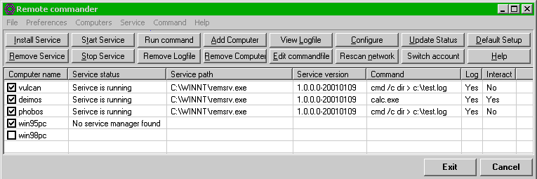
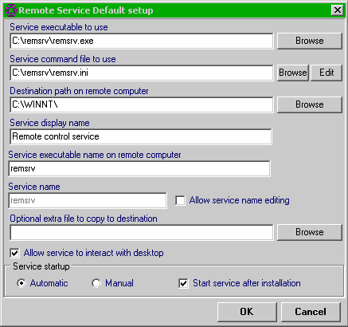
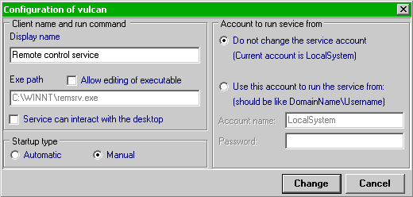
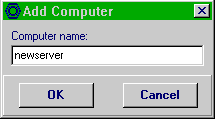
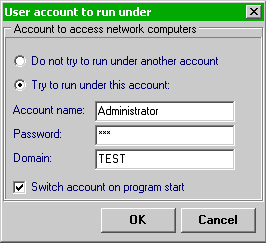

Remote Commander is designed to operate together with Remote Service, an NT service that can execute any command that it is passed via a command file. This file can be remotely edited by Remote Commander. The executed commands, and the error messages if a commond cannot be executed, can be saved in a remote logfile.
The command file and the logfile are encrypted with RC5 with a fixed key in case you don't want users to see which commands are executed. This should be replaced with public key cryptography for better security since now still anyone who can download Remote Commander can read the command- and log files. If you want more security you can recompile both Remote Commander and Remote Service with another key, as long as the key is the same for both Remote Commander and Remote Service. For this you have to change the variable EncryptionPassword in common.cpp in both source packages and recompile.
You can install remote service also on itself by running the executable with the -i or -install flag. In that case, the command file should be placed in the same directory as the service executable and have the same name, with the .exe extension replaced by .ini.
Both programs are written with Borland C++ Builder version 3.0 and come with full source code.
The program is distributed under the terms of the GNU General Public License.

If you check a checkbox in front of a computername it will try to connect with its service manager and display status information, or, if it can't find any status information, it will tell you that.
Now you can enter the default settings, like where the service should be installed on the remote computers, which command to execute, and which service executable and command file to use. You can also choose an optional extra file to copy to the destination directory, for example program you want to install remotely.

Once installed you can change the configuration of a running client.

and add computernames manually if required.

If you normally don't login with a domain administrator account and therefore can't change the configuration on remote computers, the program has a feature to run under another user account. Your current account requires the right "to run as a part of the operating system" (for NT4, see the checkbox advanced user options in the NT user manager; for Windows 2000, add the account under which you will be running rscc under this privilige in Administrative tools -> Local security policy -> Local policies -> User rights -> User rights Assignment). If you have insufficient rights the program will tell you if you try to run it with another user's priviliges.

The username, password and domain name will be stored in the program ini file. By default they will be encrypted with RC5 with a fixed key so no password will be asked at program start. This is of course a security risk, anyone who can read the program source can also decrypt the password if he can get the inifile.
Therefore you can also supply a user-defined pssword for the RC5 encryption of these data. If you choose this the program will ask this password when it starts.
The login data is never saved in plain text and is written out with the maximum field lengths to prevent anyone from finding the password length by just looking at the inifile (usefull for very short passwords that can be brute-forced).
If you feel that even this is too unsafe, you can always type in the login information each time you start the program. But remember that NT saves this info with a much weaker encryption than RC5 (see http://www.l0pht.com/ for more information on this subject).